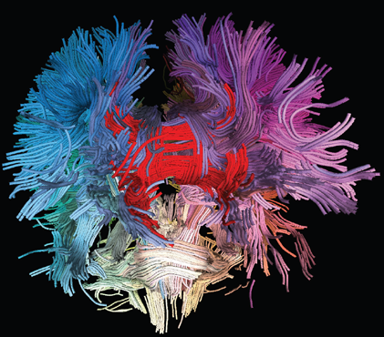
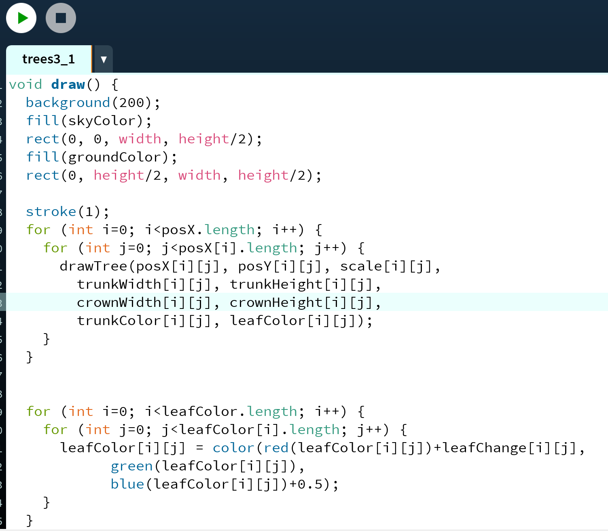
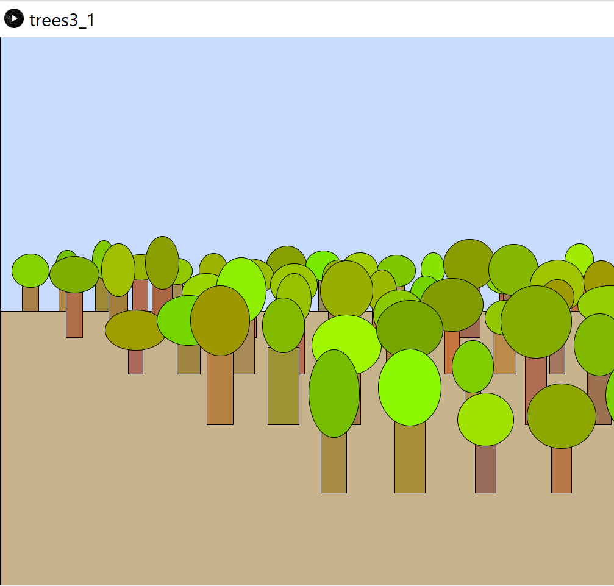
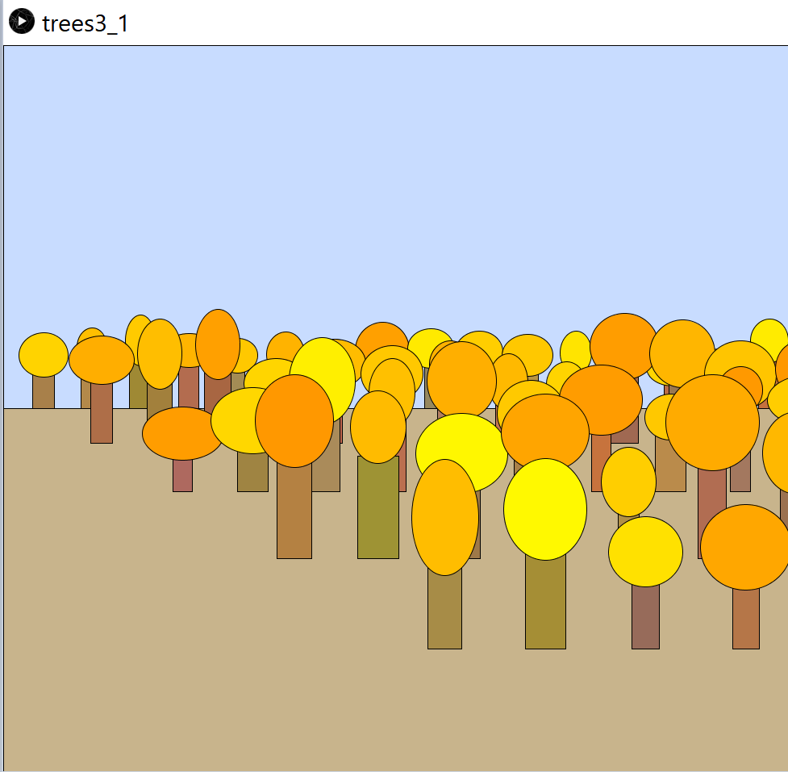

Radu JianuIn 2016 I became part of the giCentre at City, University of London where I teach and conduct research in information visualization, visual analytics, and human computer interaction. I received a Ph.D in Computer Science, with a focus on data visualization, from Brown University in 2012. Between my PhD and my move to London I was an Assistant Professor at Florida International University.I am currently exploring novel ways in which the increasingly affordable eye-tracking technology can change how people use visual data analysis systems. Specifically, I explore both diagnostic uses of eye-tracking (e.g., understanding how analysts explore information and aggregate knowledge), and interactive uses of eye-tracking (e.g., highlighting visualization elements users focus on). In a separate project, I look at how evaluating visualizations via user studies can be automated using crowd-sourcing and benchmark tasks. Finally, I search for practical applications of such fundamental computer science research through interdisciplinary collaborations with researchers in areas such as proteomics, genomics, neuroscience, economics, or architecture. |
 | |
|
|
||
Bootcamp 2020: Forest sceneMy first programming project, concluding the 2 week Programming Bootcamp at City (2020). This Processing project demonstrates a comprehensive understanding of the use of arrays, loops, and randomness. I created a forest scene in which details of each tree (e.g. position, trunk color and size, crown color and shape) are stored in parallel 2D arrays. Trees are arranged in a regular grid but their positions are jittered by small random offsets to create the impression of a real forest. Similarly, each tree trunk and crown has a individual color shade, obtained using random variations of brown and green. Finally, the forest changes over time: trees grow and their crowns become more pale to suggest seasonal change ( from spring to autumn). | ||
|    | ||
|
|
||
Java project: 2D Game, Student in UniversityMy Java project involved students, universities, and assignments. It was a great opportunity to learn about object oriented programming, model view programming, interaction and GUIs, files, etc. | ||